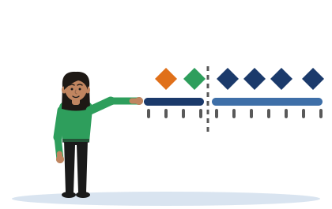

Milestone Planner
[Illustrative example - do not cite] Chathura is an invented student, and Pahana Retail is an invented business. His plan is invented too.
A milestone is a verifiable deliverable with a date. It sits on one point of the plan, on one of two week scales: P-weeks in this module and D-weeks in the delivery module.

This tool does not read, judge or mark your plan. It only places your milestones on the line and points out a few things that a machine can see: a date range, a missing dependency, a week that comes too early. Whether your plan is realistic is for you and your supervisor to decide.
Chathura's seven milestones
Your own milestones
The first two are the same for every project in this module. Add up to five more. For each one, write what will exist, and choose its week and what it depends on.
Your plan on the line
Things to look at
What you type here stays on this device. It is never sent anywhere.